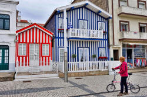

Activity types

Let's start with the obvious.
Nobody wants to spend all the time doing the same kinds of thing
over and over again and your learners are no different. What
we crave is variety so it's important to supply some.
On the other hand, activity types need to match their purposes so
variety alone isn't enough. If we focus only on variety, we'll
end up getting our learners to do things for the sake of it rather
than because it leads to some kind of learning outcome.
 |
Classifying activity types |
There are lots of activities we can use in the classroom so we
need some kind of taxonomy to know what we are talking about and
doing.
This is to get you thinking. There are three fundamental types
of tasks in this list. Try to organise the tasks into three
categories (it doesn't matter what you call them at this stage).
Click on the table when you have an answer.
You may well not have assigned these names but if you had the categories more or less right, that's good.
|  |
The characteristics of activities |
The three types of activity (awareness raising, skill getting and
skill using) have clear, identifying characteristics.
Can you make some informed guesses about what they are?
Click here when you have a response.

Lockstep or varied?
All the activity types so far
discussed can be done with everyone doing the same thing at the same
time or individually with a good deal of flexibility.
Whether one chooses a lockstep activity will often depend on the
sorts of activities, the intentions of them and the learners'
current abilities.
Awareness raising and skill getting activities are generally
lockstep but skill using is another matter and need not be done all
together.
 |
Inserting activities into lessons |
This is a planning issue but also a classroom management issue to do with giving and getting feedback and scaffolding your learners' efforts. Scaffolding is not merely a sophisticated way of saying help or support. There is much more to it and there is a guide to scaffolding and the ZPD on this site. There's a link in the in-service teaching index.
When you wrote your plan (you did write one, didn't you?) you
listed and described the stages of the lesson and what the aims of
each stage were.
Try to figure out which sort of activity (from the three
types) is being described here. Click on the
 when you have.
when you have.
| I tell the class about my efforts
to learn to play the piano. To introduce the topic of hobbies and pastimes in a personal way. |
This is an awareness-raising activity. You are
not expecting the learners to acquire any new language
or skill here (although they have to listen) so you need
to make sure your story is clear and comprehensible to
everyone.
|
| The students work alone to match
the words to the pictures of the pastimes and the correct
verb (go, play or do). Then they
compare their answers in groups of 4. To focus on the meaning of the words and on the correct collocating verb (e.g., do yoga, go swimming). |
This is a skill-getting activity. You really
do want the learners to acquire new vocabulary and be
able to use it with the correct verb.
The fact that it is checked in groups will reinforce it because there may be a need to explain choices and learn from each other. |
| I drill the language in full
sentences with the collocating verbs. To refine and improve pronunciation and sentence stress and to reinforce patterns of collocation. |
Another skill-getting activity. You are not
asking the students to use the language in any
meaningful sense. You want them to focus on form
and pattern.
You also, incidentally, believe that repetition and imitation are effective tools in the learning process but that's another matter. |
| Individually, the students select
two pastimes from the list and think about why they would
like to take them up one day. To prepare for the mingle and allow thinking time |
This is mostly an awareness-raiser. You are
not requiring the students to learn anything new or use
any language except to themselves.
The fact that the learners have a little individual space and time to consider the language can, however, contribute to more effective skill getting. |
| The students mingle to see if they
can find anyone in the class who has a preferred pastime in
mind and for which reasons |
This is skill using. The students are actually
having to deploy the language in a quasi-communicative
fashion and talk about something that is personal.
Skill using reinforces skill getting in this way.
|
| Students listen to the tape
recording of four speakers and decide in pairs what pastime
is being talked about. To extend the students' knowledge and get them to focus on the collocating verbs and places where the pastimes are practised. |
This is skills getting insofar as the learners are
listening for correct collocations so if a speaker says,
I do it in the village hall, we know he's not
talking about golf because you play golf and
not in a village hall (usually).
|
| All the students stand and must
give me the name of a pastime with its collocating verb
before they can go for their coffee break |
This has two functions:
It is skills using insofar as the students have to display their knowledge to themselves and the teacher. It is awareness raising in that it demonstrates to the learners what they have acquired. |
 |
In what order? |
This depends on the lesson structure (and there's a guide to on this site linked in the list of related guides at the end).
- In traditional lessons of the Presentation – Practice – Production type
- Awareness raising will usually come before skill getting and
skill using is confined to the final phase.
This cycle, however, may happen two or three times in the same lesson. - In Test – Teach – Test lessons
- Skill using will come before skill getting and then skill using will again be the focus. Awareness raising still usually comes first.
- In Task-based Learning lessons
- Awareness raising has to come early but then the focus is on entwined skill using and skill getting. The theory is that skill using stimulates skill getting.
So there's no single right way to order the activities. We do, however, need to make sensible judgements about what sorts of activities we need and when we need them or lessons can disintegrate.
| Related guides | |
| task types | the next obvious guide which concerns itself with the kinds of tasks which can be embedded in activity phases |
| structuring lessons | for a guide to how lessons may be designed based on some clear principles |
| context | whatever the type of activity or task you use, context is something to strive for |
| grouping learners | to see how learners should be arranged to make the most of activities and tasks |
| planning | for a guide to how to plan activities and tasks as part of lessons |